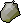

Jewelry
In order to craft jewelry you will need one gem, one bar, and the mould of the jewelry you are crafing. With this in your inventory, you will then go to a furnace, and click the jewelry you plan to make. This process will net you crafting experience, and the more that you get, the higher level items you will be able to make. Usually, a higher level item would cost more to make and give you more experience. However, many times when you sell your product, that being jewelry in this case, you will profit. This makes training crafing this way efficient, since you gain levels and gold. More value information can be found on the Values Page and the Crafting Calculator.
-
 Opal Ring
Opal RingCan be crafted at Lvl 1 for 10 XP.
 Opal Necklace
Opal NecklaceCan be crafted at Lvl 16 for 35 XP.
 Opal Bracelet
Opal BraceletCan be crafted at Lvl 22 for 45 XP.
.png) Opal Amulet
Opal AmuletCan be crafted at Lvl 27 for 55 XP.
-
Jade Ring
Can be crafted at Lvl 13 for 32 XP.
 Jade Necklace
Jade NecklaceCan be crafted at Lvl 25 for 54 XP.
 Jade Bracelet
Jade BraceletCan be crafted at Lvl 29 for 60 XP.
.png) Jade Amulet
Jade AmuletCan be crafted at Lvl 34 for 70 XP.
-
 Topaz Ring
Topaz RingCan be crafted at Lvl 16 for 35 XP.
Topaz Necklace
Can be crafted at Lvl 32 for 70 XP.
 Topaz Bracelet
Topaz BraceletCan be crafted at Lvl 38 for 75 XP.
.png) Topaz Amulet
Topaz AmuletCan be crafted at Lvl 45 for 80 XP.
-
 Sapphire Ring
Sapphire RingCan be crafted at Lvl 20 for 40 XP.
 Sapphire Necklace
Sapphire NecklaceCan be crafted at Lvl 22 for 55 XP.
 Sapphire Bracelet
Sapphire BraceletCan be crafted at Lvl 23 for 60 XP.
Sapphire Amulet
Can be crafted at Lvl 24 for 65 XP.
-
Emerald Ring
Can be crafted at Lvl 27 for 55 XP.
 Emerald Necklace
Emerald NecklaceCan be crafted at Lvl 29 for 60 XP.
 Emerald Bracelet
Emerald BraceletCan be crafted at Lvl 30 for 65 XP.
.png) Emerald Amulet
Emerald AmuletCan be crafted at Lvl 31 for 70 XP.
-
Ruby Ring
Can be crafted at Lvl 34 for 70 XP.
 Ruby Necklace
Ruby NecklaceCan be crafted at Lvl 40 for 75 XP.
 Ruby Bracelet
Ruby BraceletCan be crafted at Lvl 42 for 80 XP.
Ruby Amulet
Can be crafted at Lvl 50 for 85 XP.
-
 Diamond Ring
Diamond RingCan be crafted at Lvl 43 for 85 XP.
 Diamond Necklace
Diamond NecklaceCan be crafted at Lvl 56 for 90 XP.
 Diamond Bracelet
Diamond BraceletCan be crafted at Lvl 58 for 95 XP.
.png) Diamond Amulet
Diamond AmuletCan be crafted at Lvl 70 for 100 XP.
-
Dragonstone Ring
Can be crafted at Lvl 55 for 100 XP.
 Dragon Necklace
Dragon NecklaceCan be crafted at Lvl 72 for 105 XP.
 Dragonstone Bracelet
Dragonstone BraceletCan be crafted at Lvl 74 for 110 XP.
Dragonstone Amulet
Can be crafted at Lvl 80 for 150 XP.
Gemstones
Cutting gemstones reffers to the act of getting a rough gemstone and polishing it into a gemstone with a chisel in order to use it in jewelrycrafting.
Cutting gemstones is by far the fastest way to earn xp, however, it is also an extremely expensive endeavor, netting you a huge loss. Only the gemstones that have a chance to break can earn you profit, and even then it is at a risk due to the chance for gemstones to get crushed when cutting them. At higher levels, your chance to crush the gemstone and lose it decreases, for this reason some may not be profitable to even try cutting until you reach a certain level. Those gemstones that don't have a chance to get crushed are always at a net loss of value from uncut to cut.
For the sake of this website and what you are meant to do with this information, you should be purchasing all your gemstones in their cut form from the Grand Exchange.
 Opal Gemstone
Can be cut at Lvl 1 for 15 XP, Chance to crush the gem on cutting.
 Jade Gemstone
Jade GemstoneCan be cut at Lvl 13 for 20 XP, Chance to crush the gem on cutting.
 Red Topaz Gemstone
Red Topaz GemstoneCan be cut at Lvl 16 for 25 XP, Chance to crush the gem on cutting.
-
Sapphire Gemstone
Can be cut at Lvl 20 for 50 XP.
 Emerald Gemstone
Emerald GemstoneCan be cut at Lvl 27 for 67.5 XP.
Ruby Gemstone
Can be cut at Lvl 34 for 85 XP.
-
 Diamond Gemstone
Diamond GemstoneCan be cut at Lvl 43 for 107.5 XP.
 Dragonstone
DragonstoneCan be cut at Lvl 55 for 137.5 XP.
Bars
These metal bars are forged from their respective ores, which can be mined in various placed around the world.
At a great cost to time, you can increase your profits, or even make a previously unprofitable method profitable, by going ahead and mining the ore you need then smelting it into its bars. This process will also gain you mining and smithing xp, which is a nice bonus.
In the case that you don't want to mine the ore, do not bother purchasing and smelting it; gold ore is a net loss to smith from ore to bar in terms of profit, however it makes from exceptionally fast smithing xp if done with gold gauntlets and ice gloves at the blast furnace. Smithing silver ore into silver bar is profitable, however it takes a very long time and doesn't really give much smithing xp, so for the sake of this, it is not worth it.
-
 Silver Bar
Silver BarCan be smithed at Lvl 20 for 13.7 XP.
-
Gold Bar
Can be smithed at Lvl 40 for 22.5 XP.